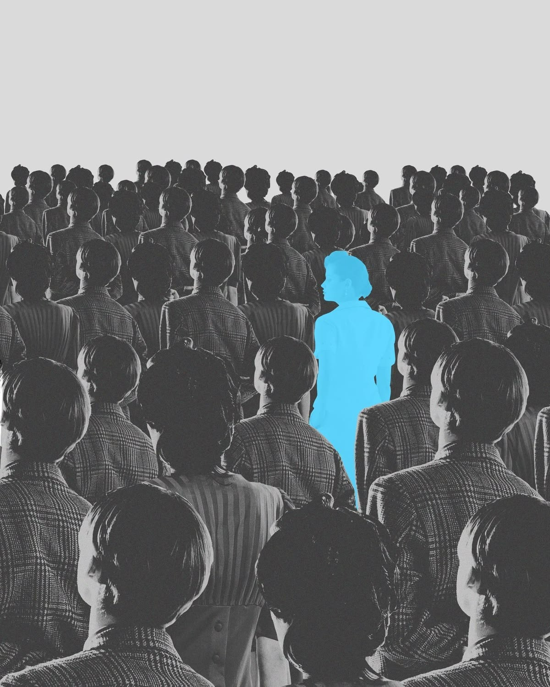
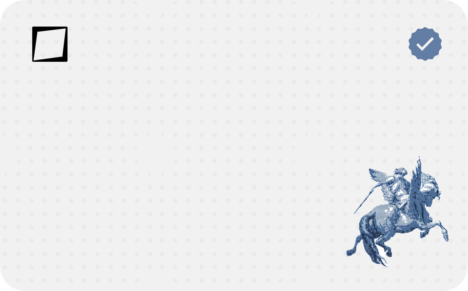

CRP
early access
Join the development process
Join the early access program to receive beta features, experimental tools, and priority product updates
What we expect from you
STAY ACTIVE
Activity will be expressed as the number of your comments and reviews each month. Inactive users who do not meet the conditions will be removed from the program.
HONEST FEEDBACK
Try to write useful comments that can help us develop.
USE IT
Actually use the products you receive.
What do testers get?
-
Join the development
Get physical prototypes for free and early access to beta features before anyone else.
-
Tester pricing
Exclusive discounts on selected CRP products.
-
Direct influence
Your feedback can influence what we build and how we build it.

-
Tester card
A CRP tester card for every accepted tester — your pass into the program, and into Google Wallet.
